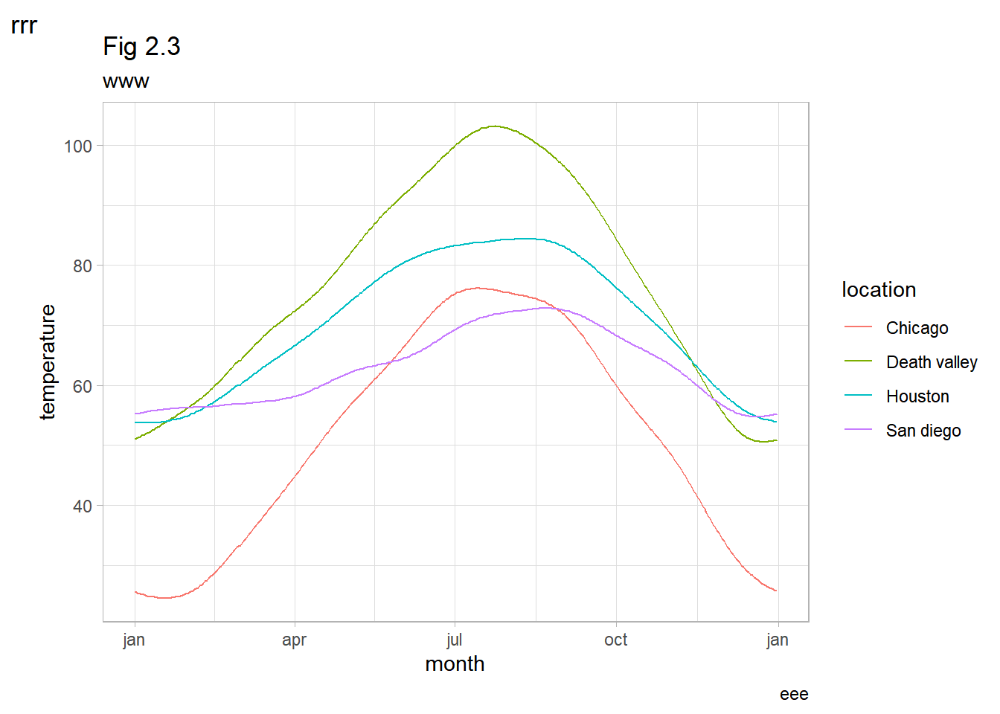

training markdown & GGplot
Rstudio
Data Visualization
train markdown, ggplot
library(ggplot2)
library(dplyr)
다음의 패키지를 부착합니다: 'dplyr'The following objects are masked from 'package:stats':
filter, lagThe following objects are masked from 'package:base':
intersect, setdiff, setequal, uniondata_raw <- read.csv("https://vincentarelbundock.github.io/Rdatasets/csv/ggplot2/mpg.csv")
data_raw %>% dim()[1] 234 12data_raw %>% head() X manufacturer model displ year cyl trans drv cty hwy fl class
1 1 audi a4 1.8 1999 4 auto(l5) f 18 29 p compact
2 2 audi a4 1.8 1999 4 manual(m5) f 21 29 p compact
3 3 audi a4 2.0 2008 4 manual(m6) f 20 31 p compact
4 4 audi a4 2.0 2008 4 auto(av) f 21 30 p compact
5 5 audi a4 2.8 1999 6 auto(l5) f 16 26 p compact
6 6 audi a4 2.8 1999 6 manual(m5) f 18 26 p compactdata_raw %>% summary() X manufacturer model displ
Min. : 1.00 Length:234 Length:234 Min. :1.600
1st Qu.: 59.25 Class :character Class :character 1st Qu.:2.400
Median :117.50 Mode :character Mode :character Median :3.300
Mean :117.50 Mean :3.472
3rd Qu.:175.75 3rd Qu.:4.600
Max. :234.00 Max. :7.000
year cyl trans drv
Min. :1999 Min. :4.000 Length:234 Length:234
1st Qu.:1999 1st Qu.:4.000 Class :character Class :character
Median :2004 Median :6.000 Mode :character Mode :character
Mean :2004 Mean :5.889
3rd Qu.:2008 3rd Qu.:8.000
Max. :2008 Max. :8.000
cty hwy fl class
Min. : 9.00 Min. :12.00 Length:234 Length:234
1st Qu.:14.00 1st Qu.:18.00 Class :character Class :character
Median :17.00 Median :24.00 Mode :character Mode :character
Mean :16.86 Mean :23.44
3rd Qu.:19.00 3rd Qu.:27.00
Max. :35.00 Max. :44.00 data_use <- data_raw %>% select(-1)
data_use %>% head() manufacturer model displ year cyl trans drv cty hwy fl class
1 audi a4 1.8 1999 4 auto(l5) f 18 29 p compact
2 audi a4 1.8 1999 4 manual(m5) f 21 29 p compact
3 audi a4 2.0 2008 4 manual(m6) f 20 31 p compact
4 audi a4 2.0 2008 4 auto(av) f 21 30 p compact
5 audi a4 2.8 1999 6 auto(l5) f 16 26 p compact
6 audi a4 2.8 1999 6 manual(m5) f 18 26 p compactggplot(data_use, aes(x=displ, y=hwy)) + geom_point()
ggplot(data_use, aes(x=displ, y=hwy)) + geom_smooth()`geom_smooth()` using method = 'loess' and formula = 'y ~ x'
ggplot(data_use, aes(x=displ, y=hwy)) +
geom_point() +
geom_smooth()`geom_smooth()` using method = 'loess' and formula = 'y ~ x'
2023/03/20
load data
data_file <- read.csv("ncdc_normals.csv")dim(data_file)[1] 2745366 6data_file %>% head() station_id month day temperature flag date
1 AQW00061705 1 1 82.4 C 0000-01-01
2 AQW00061705 1 2 82.4 C 0000-01-02
3 AQW00061705 1 3 82.4 C 0000-01-03
4 AQW00061705 1 4 82.4 C 0000-01-04
5 AQW00061705 1 5 82.4 C 0000-01-05
6 AQW00061705 1 6 82.4 C 0000-01-06data_file %>% sapply(class) station_id month day temperature flag date
"character" "integer" "integer" "numeric" "character" "character" data_file$date <- data_file$date %>% as.Date("%Y-%m-%d")data_file %>% sapply(class) station_id month day temperature flag date
"character" "integer" "integer" "numeric" "character" "Date" data_file$station_id %>% unique() %>% length()[1] 75014개 역만 정해서 join() 사용
station_loc <- data.frame(station_id = c("USW00014819","USC00042319","USW00093107","USW00012918"),
location = c("Chicago","Death valley","San diego","Houston"))temps_long <- data_file %>% inner_join(station_loc,by="station_id")
temps_long %>% head() station_id month day temperature flag date location
1 USC00042319 1 1 51.0 S 0000-01-01 Death valley
2 USC00042319 1 2 51.2 S 0000-01-02 Death valley
3 USC00042319 1 3 51.3 S 0000-01-03 Death valley
4 USC00042319 1 4 51.4 S 0000-01-04 Death valley
5 USC00042319 1 5 51.6 S 0000-01-05 Death valley
6 USC00042319 1 6 51.7 S 0000-01-06 Death valleyggplot(temps_long, aes(x=date,y=temperature,color=location))+geom_line()
#x축에 표시할 눈금
date_s <- "0000-01-01" %>% as.Date("%Y-%m-%d") #Y는 대문자
date_e <- "0001-01-01" %>% as.Date("%Y-%m-%d")
break_date <- seq.Date(date_s, date_e, by = "3 month")ggplot(temps_long, aes(x=date, y=temperature, color=location))+
geom_line()+
scale_x_date(name="month",
breaks = break_date,
labels = c("jan", "apr", "jul", "oct", "jan"))+
theme_light()
ggplot(temps_long, aes(x=date, y=temperature, color=location))+
geom_line()+
scale_y_continuous(name = "temp",
limits = c(0,100))+
theme_light()
ggplot(temps_long, aes(x=date, y=temperature, color=location))+
geom_line()+
scale_x_date(name="month",
breaks = break_date,
labels = c("jan", "apr", "jul", "oct", "jan"))+
theme_light()+
labs(title = "Fig 2.3", subtitle = "www", caption = "eee", tag = "rrr")
2021년 서울, 대전, 세종, 제주 기온 데이터
read csv from github ex)
data_2021 <- read.csv("https://raw.githubusercontent.com/Sungileo/trainsets/main/OBS_ASOS_DD_20220308125952.csv", fileEncoding = "euc-kr")자료형 확인
data_2021 %>% dim()[1] 1460 6data_2021 %>% head() 지점 지점명 일시 평균기온..C. 최저기온..C. 최고기온..C.
1 108 서울 2021-01-01 -4.2 -9.8 1.6
2 108 서울 2021-01-02 -5.0 -8.4 -1.4
3 108 서울 2021-01-03 -5.6 -9.1 -2.0
4 108 서울 2021-01-04 -3.5 -8.4 0.3
5 108 서울 2021-01-05 -5.5 -9.9 -2.1
6 108 서울 2021-01-06 -7.4 -12.0 -1.9data_2021 %>% sapply(class) 지점 지점명 일시 평균기온..C. 최저기온..C. 최고기온..C.
"integer" "character" "character" "numeric" "numeric" "numeric" 일시 자료형을 date형태로 바꾸기
data_2021$일시 <-data_2021$일시 %>% as.Date("%Y-%m-%d")
data_2021 %>% sapply(class) 지점 지점명 일시 평균기온..C. 최저기온..C. 최고기온..C.
"integer" "character" "Date" "numeric" "numeric" "numeric" 기초통계량 확인
data_2021 %>% summary() 지점 지점명 일시 평균기온..C.
Min. :108.0 Length:1460 Min. :2021-01-01 Min. :-14.90
1st Qu.:126.8 Class :character 1st Qu.:2021-04-02 1st Qu.: 7.90
Median :158.5 Mode :character Median :2021-07-02 Median : 15.00
Mean :166.0 Mean :2021-07-02 Mean : 14.77
3rd Qu.:197.8 3rd Qu.:2021-10-01 3rd Qu.: 23.10
Max. :239.0 Max. :2021-12-31 Max. : 31.70
최저기온..C. 최고기온..C.
Min. :-19.10 Min. :-10.70
1st Qu.: 3.10 1st Qu.: 13.18
Median : 11.10 Median : 20.15
Mean : 10.69 Mean : 19.56
3rd Qu.: 19.60 3rd Qu.: 27.70
Max. : 28.10 Max. : 36.50 breaks 설정
date_21s <- "2021-01-01" %>% as.Date("%Y-%m-%d") #Y는 대문자
date_21e <- "2022-01-01" %>% as.Date("%Y-%m-%d")
break_date_21 <- seq.Date(date_21s, date_21e, by = "3 month")ploting
#data_2021 %>% names()
ggplot(data_2021,aes(x = 일시,y = 평균기온..C., color = 지점명))+
geom_line(linewidth = 1) +
scale_x_date(name ="월",
breaks = break_date_21,
labels = c("1월","4월","7월","10월","1월")) +
scale_y_continuous(name = "평균기온")+
theme_light()
2022년
data_2022 <- read.csv("https://raw.githubusercontent.com/Sungileo/trainsets/main/OBS_ASOS_DD_20230322080932.csv", fileEncoding = "euc-kr")자료형 확인
data_2022 %>% dim()[1] 2555 6data_2022 %>% head() 지점 지점명 일시 평균기온..C. 최저기온..C. 최고기온..C.
1 108 서울 2022-01-01 -4.3 -10.2 2.3
2 108 서울 2022-01-02 -1.3 -5.2 3.0
3 108 서울 2022-01-03 -1.9 -8.0 2.5
4 108 서울 2022-01-04 -2.5 -5.6 1.0
5 108 서울 2022-01-05 -2.8 -7.8 1.9
6 108 서울 2022-01-06 -2.2 -5.9 3.3data_2022 %>% sapply(class) 지점 지점명 일시 평균기온..C. 최저기온..C. 최고기온..C.
"integer" "character" "character" "numeric" "numeric" "numeric" 일시 자료형을 date형태로 바꾸기
data_2022$일시 <-data_2022$일시 %>% as.Date("%Y-%m-%d")
data_2022 %>% sapply(class) 지점 지점명 일시 평균기온..C. 최저기온..C. 최고기온..C.
"integer" "character" "Date" "numeric" "numeric" "numeric" 기초통계량 확인
data_2022 %>% summary() 지점 지점명 일시 평균기온..C.
Min. :108.0 Length:2555 Min. :2022-01-01 Min. :-11.80
1st Qu.:133.0 Class :character 1st Qu.:2022-04-02 1st Qu.: 8.20
Median :185.0 Mode :character Median :2022-07-02 Median : 16.40
Mean :175.1 Mean :2022-07-02 Mean : 15.27
3rd Qu.:189.0 3rd Qu.:2022-10-01 3rd Qu.: 23.00
Max. :239.0 Max. :2022-12-31 Max. : 32.20
NA's :2
최저기온..C. 최고기온..C.
Min. :-13.800 Min. :-8.60
1st Qu.: 4.225 1st Qu.:12.30
Median : 12.600 Median :20.75
Mean : 11.626 Mean :19.49
3rd Qu.: 19.800 3rd Qu.:27.20
Max. : 28.900 Max. :37.50
NA's :1 NA's :1 breaks 설정
date_22s <- "2022-01-01" %>% as.Date("%Y-%m-%d") #Y는 대문자
date_22e <- "2023-01-01" %>% as.Date("%Y-%m-%d")
break_date_22 <- seq.Date(date_22s, date_22e, by = "3 month")ploting
#data_2021 %>% names()
ggplot(data_2022,aes(x = 일시,y = 평균기온..C., color = 지점명))+
geom_line(linewidth = 1) +
scale_x_date(name ="월",
breaks = break_date_22,
labels = c("1월","4월","7월","10월","1월")) +
scale_y_continuous(name = "평균기온")+
theme_light()
mean_temps <- temps_long %>%
group_by(location,month) %>%
summarize(mean = mean(temperature)) %>%
ungroup() %>%
mutate(month = factor(month %>% paste(),
levels = 1:12 %>% paste()))`summarise()` has grouped output by 'location'. You can override using the
`.groups` argument.ggplot(mean_temps,aes(x = month, y = location, fill = mean))+
geom_tile(width = .95,height = 0.95)+
scale_fill_viridis_c(option = "B",begin = 0.15, end = 0.98,
name = "temperature")+
coord_fixed(expand = FALSE)+
ylab(NULL)